Your complete session
Upper C
Follow the sequence at your own pace. Choose manageable loads and comfortable ranges; leave the prescribed good repetitions in reserve.
Warm up
Easy bike or walk
2 minutes, easy

Keep this conversational and easy; adjust the bike to your comfort. Photo: Hospital for Special Surgery ↗ - Move easily enough to talk normally.
Keep this easy. Stop a movement that produces pain, catching, apprehension or loss of control; do not force end range.
Active wrist flexion and extension
1 × 8 full cycles, both wrists together
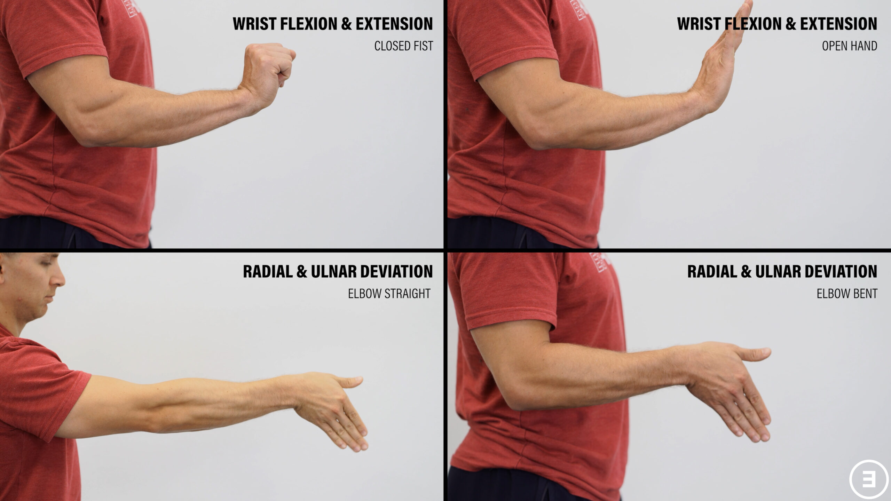
Gently bend and straighten the wrist. Add slow palm-up/palm-down cycles for the home option. Photo: E3 Rehab ↗ - Support forearms; move both wrists gently up and down.
Keep this easy. Stop a movement that produces pain, catching, apprehension or loss of control; do not force end range.
Open and close hands
1 × 10, both hands together
Open and close gently; keep the wrist comfortable. Photo: E3 Rehab ↗ - Open and close gently; do not squeeze maximally.
Keep this easy. Stop a movement that produces pain, catching, apprehension or loss of control; do not force end range.
Comfortable active shoulder elevation
1 × 8, both arms together
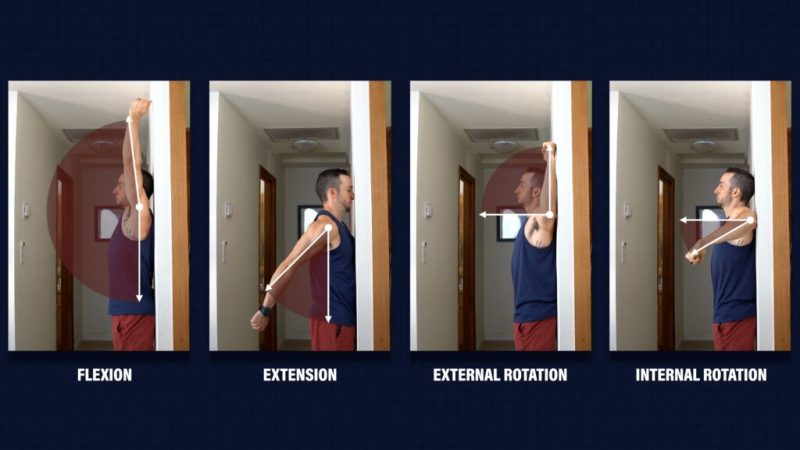
Raise only through your comfortable arc; reaching the photographed endpoint is not required. Photo: E3 Rehab ↗ - Raise arms in a comfortable direction; stop before a painful catch.
Keep this easy. Stop a movement that produces pain, catching, apprehension or loss of control; do not force end range.
Easy bilateral band external rotation
1 × 10, both arms together; very light
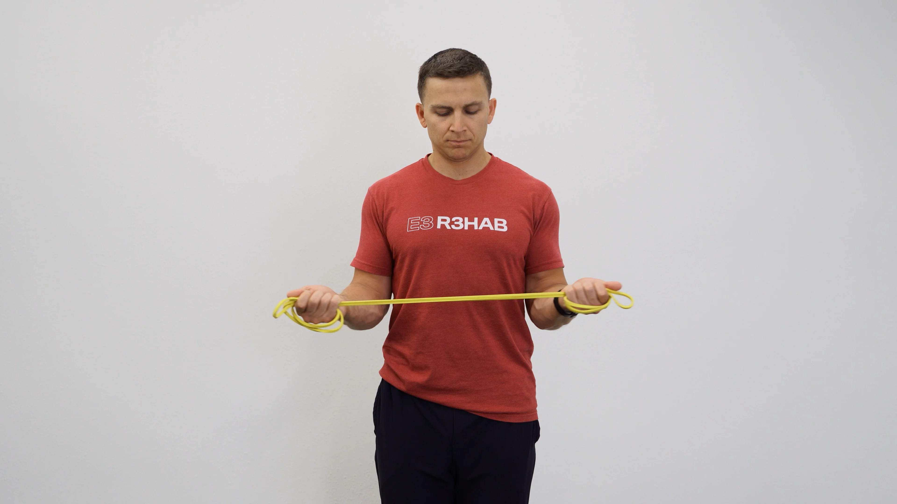
Keep elbows near the ribs and use very light tension. Photo: E3 Rehab ↗ - Elbows near the sides; rotate both forearms outward together.
- Do not twist the trunk or chase band tension.
Keep this easy. Stop a movement that produces pain, catching, apprehension or loss of control; do not force end range.
Move to first lift
1 minute transition allowance
- Set up the first exercise; this is not another working set.
Keep this easy. Stop a movement that produces pain, catching, apprehension or loss of control; do not force end range.
Strength & targeted rehab
One-arm supported dumbbell row
Strength · unilateral; both sides
Rest: 45 seconds to rest and switch sides; 120 seconds after both sides.
Light rehearsal sets first:
- 8 reps each side; rest 60 seconds afterward.
- 4 reps each side; rest 90 seconds afterward.
3 × 8–10 each side · 2–3 good reps left
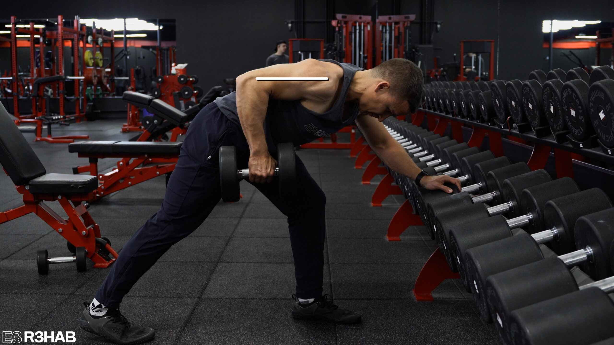
Use a stable bench or rack; keep the torso controlled. Photo: E3 Rehab ↗ - Brace on a stable bench with a comfortable wrist and row one dumbbell.
- Keep the trunk steady; stop without forcing the elbow behind the body.
Stop the provoking set for painful catching, slipping/giving way, or meaningful loss of normal arm function. Do not test through it; recurring or substantial features warrant qualified assessment before progressing the provoking movement.
Incline push-up on stable elevated surface/handles
Strength · bilateral simultaneous; both arms together
Rest: 150 seconds between sets.
Light rehearsal sets first:
- 6 reps; rest 60 seconds afterward.
- 3 reps; rest 90 seconds afterward.
3 × 8–12 · 2–3 good reps left
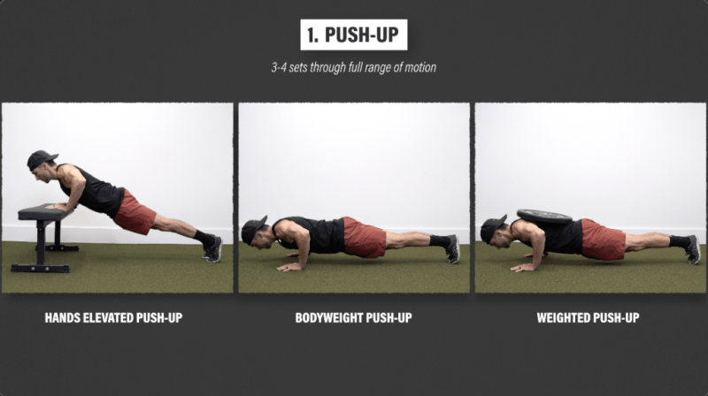
Use a stable height and handles if needed; higher is easier. Photo: E3 Rehab ↗ - Use a stable elevated support and lower the chest between the hands.
- Choose a height that leaves reserve; let shoulder blades move naturally.
- Use stable neutral-wrist handles if useful.
Stop the provoking set for painful catching, slipping/giving way, or meaningful loss of normal arm function. Do not test through it; recurring or substantial features warrant qualified assessment before progressing the provoking movement.
Simultaneous dumbbell hammer curl
Strength · bilateral simultaneous; both arms together
Rest: 90 seconds between sets.
2 × 8–12 · 2–3 good reps left
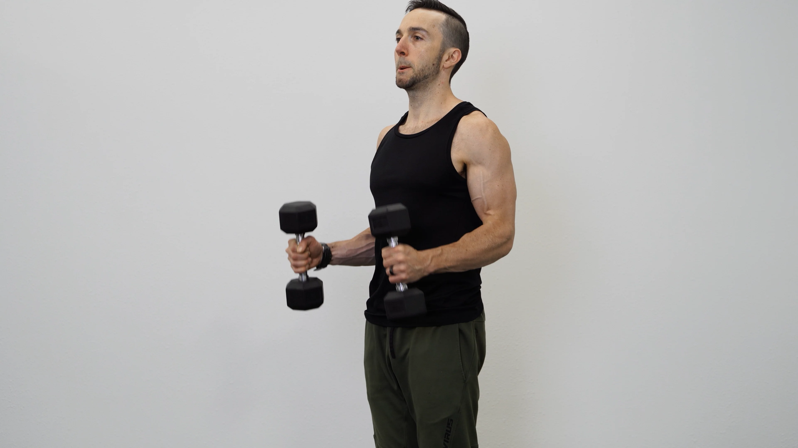
Keep thumbs up and curl both weights together. Photo: E3 Rehab ↗ - Both arms together; keep upper arms near the sides.
- Keep wrists comfortable and avoid swinging.
Stop for new or increasing joint/tendon-region pain, loss of control or altered everyday function. Repeat the last tolerable dose or reduce it; persistent or substantial recurrence warrants assessment.
Standing cable chop/controlled trunk rotation
Strength · both sides; one rotational direction then the other
Rest: 30 seconds to rest and switch sides; 90 seconds after both sides.
2 × 8–12 each side · 2–3 good reps left
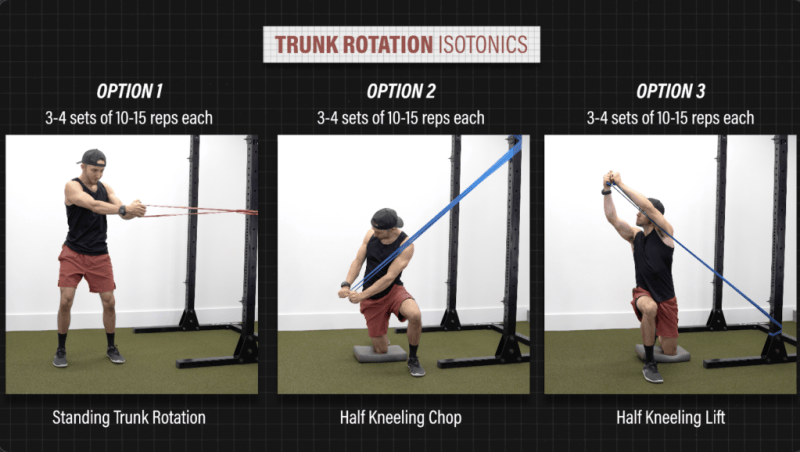
Use a controlled, small rotation; the photo shows a band version. Photo: E3 Rehab ↗ - Hold the cable with both hands and rotate slowly through a comfortable arc.
- Let the feet and hips pivot; do not wrench a planted knee.
Stop for new or increasing joint/tendon-region pain, loss of control or altered everyday function. Repeat the last tolerable dose or reduce it; persistent or substantial recurrence warrants assessment.
Chest-supported dumbbell reverse fly
Rehab · bilateral simultaneous; both arms together
Rest: 90 seconds between sets.
2 × 10–15 · 2–3 good reps left
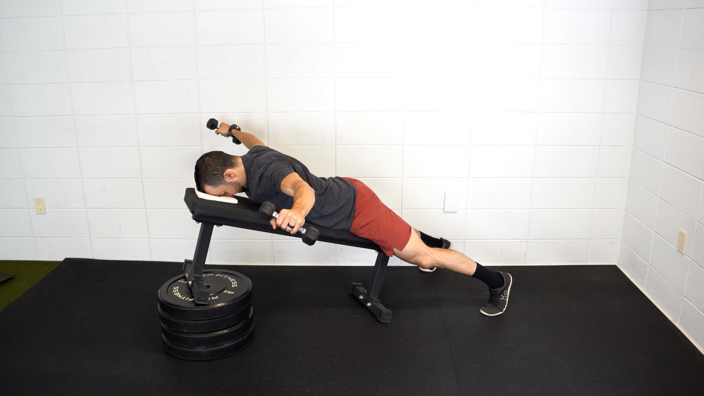
Lift the arms out to the sides. Bend the elbows more for the short-lever swap. Photo: E3 Rehab ↗ - Rest chest on the incline bench; open both arms outward with soft elbows.
- Keep the arc controlled and stop before forcing arms behind the torso.
Stop the provoking set for painful catching, slipping/giving way, or meaningful loss of normal arm function. Do not test through it; recurring or substantial features warrant qualified assessment before progressing the provoking movement.
Supported cable external rotation, elbow near side
Rehab · unilateral; both sides
Rest: 30 seconds to rest and switch sides; 90 seconds after both sides.
2 × 10–15 each side · 2–4 good reps left
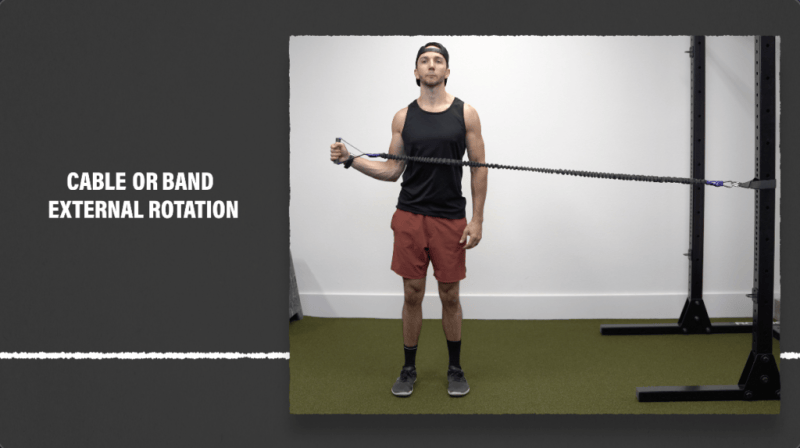
Same rotation pattern; use a cable at elbow height and support the elbow if needed. Photo: E3 Rehab ↗ - Keep the elbow near the side with towel support if helpful.
- Do not twist the torso or force range.
Stop the provoking set for painful catching, slipping/giving way, or meaningful loss of normal arm function. Do not test through it; recurring or substantial features warrant qualified assessment before progressing the provoking movement.
Cable triceps pressdown
Rehab · bilateral simultaneous; both arms together
Rest: 90 seconds between sets.
2 × 8–12 · 2–3 good reps left
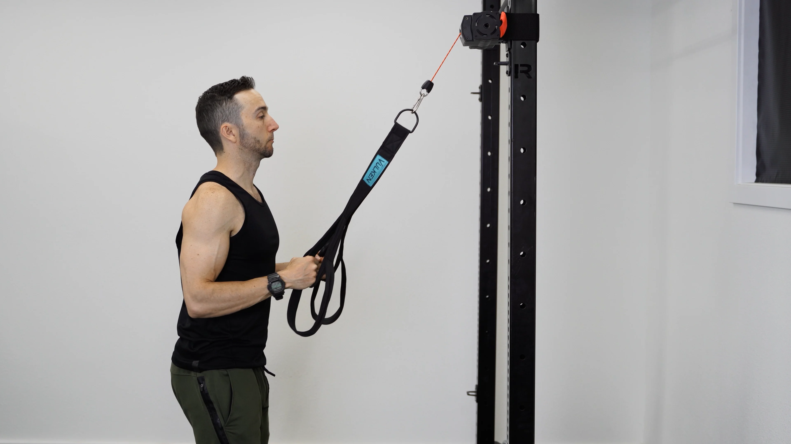
Keep upper arms near your sides and straighten the elbows. Photo: E3 Rehab ↗ - Keep upper arms near the sides and extend both elbows against the cable.
- Return through a comfortable bend without snapping into lockout.
Stop for new or increasing joint/tendon-region pain, loss of control or altered everyday function. Repeat the last tolerable dose or reduce it; persistent or substantial recurrence warrants assessment.
Supported dumbbell wrist extension
Rehab · bilateral simultaneous; both arms together
Rest: 60 seconds between sets.
2 × 10–15 · 2–4 good reps left
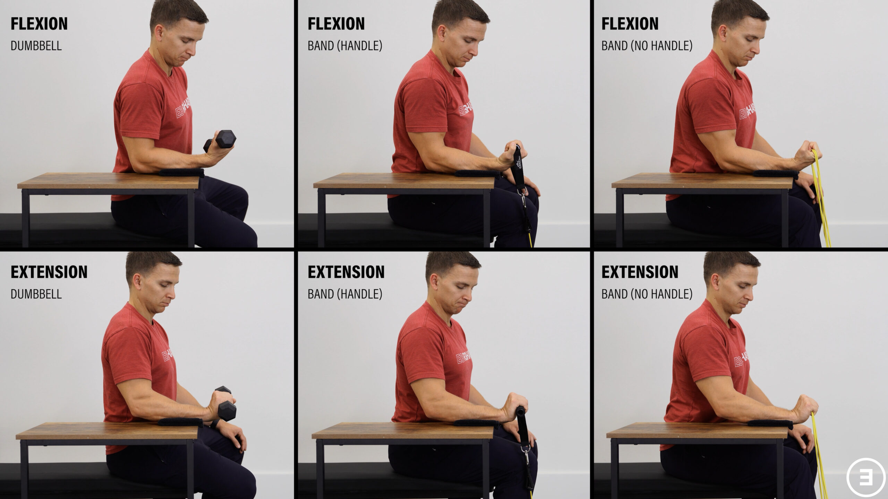
Support the forearm; lift the back of the hand. Photo: E3 Rehab ↗ - Forearms supported.
- Both wrists move together through a comfortable arc.
Stop for new or increasing joint/tendon-region pain, loss of control or altered everyday function. Repeat the last tolerable dose or reduce it; persistent or substantial recurrence warrants assessment.
Supported forearm pronation/supination with light lever
Rehab · unilateral; both sides; each cycle includes both directions
Rest: 30 seconds to rest and switch sides.
1 × 8–12 cycles each side · 2–4 good reps left
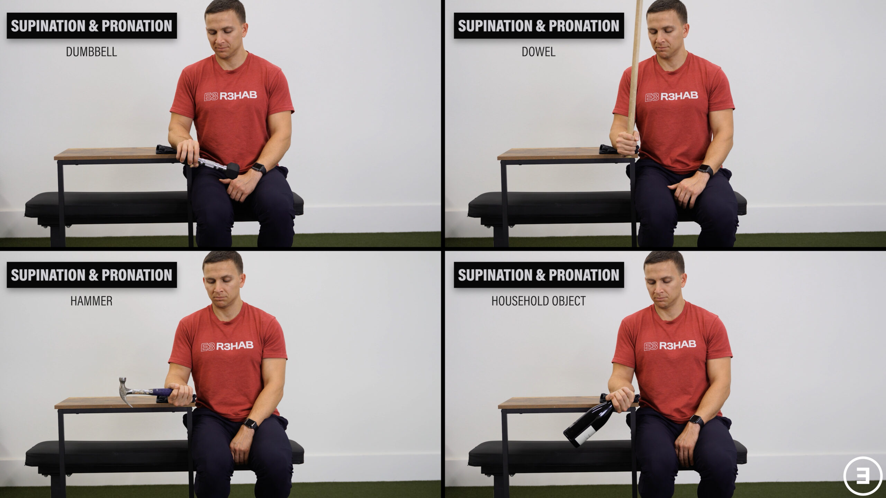
Rotate palm up and palm down; keep the elbow and forearm supported. Photo: E3 Rehab ↗ - Support the forearm; turn palm up, palm down, then back to neutral.
- Use a short light lever and keep the upper arm still.
- That complete cycle is one repetition; allow about 8 seconds.
Stop for new or increasing joint/tendon-region pain, loss of control or altered everyday function. Repeat the last tolerable dose or reduce it; persistent or substantial recurrence warrants assessment.
Mobility
Comfortable active shoulder elevation
1 × 8, both arms together
Raise only through your comfortable arc; reaching the photographed endpoint is not required. Photo: E3 Rehab ↗ - Use a comfortable arm direction and height; no forced overhead reach.
Keep this easy. Stop a movement that produces pain, catching, apprehension or loss of control; do not force end range.
Gentle wrist flexion-extension movement
2 × 30 seconds per wrist; active movement, not a hold
Gently bend and straighten the wrist. Add slow palm-up/palm-down cycles for the home option. Photo: E3 Rehab ↗ - Move the wrist gently for each bout; this is not an end-range hold.
- No forced pressure from the other hand.
Keep this easy. Stop a movement that produces pain, catching, apprehension or loss of control; do not force end range.
Use the interactive copy for swaps and temporary adjustments. No workout history is recorded.